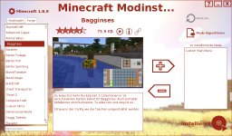

Minecraft Modinstaller
Dieser Artikel wurde für die folgenden Ubuntu-Versionen getestet:
Ubuntu 16.04 Xenial Xerus
Ubuntu 14.04 Trusty Tahr
Zum Verständnis dieses Artikels sind folgende Seiten hilfreich:
Der Minecraft Modinstaller  (auch MC Modinstaller oder Minecraft-Modder) ist ein in Java programmiertes Werkzeug, um ca. 180 Mods für Minecraft einfach und schnell installieren zu können. Das Programm schlägt passend zur installierten Minecraft-Version eine Liste von Mods vor, die mit einem Mausklick installiert werden können. Eine deutschsprachige Beschreibung mit Bildern und Bewertungen hilft bei der Auswahl der Mods.
(auch MC Modinstaller oder Minecraft-Modder) ist ein in Java programmiertes Werkzeug, um ca. 180 Mods für Minecraft einfach und schnell installieren zu können. Das Programm schlägt passend zur installierten Minecraft-Version eine Liste von Mods vor, die mit einem Mausklick installiert werden können. Eine deutschsprachige Beschreibung mit Bildern und Bewertungen hilft bei der Auswahl der Mods.
Die Herstellerseite schweigt sich zur Lizenz aus - vermutlich handelt es sich um Freeware, die kostenlos eingesetzt werden kann.
Voraussetzungen¶
Die einzige Voraussetzung ist eine aktuelle Version von Oracle Java - wobei noch getestet werden müsste, ob es nicht doch mit dem bei Ubuntu gebräuchlichen OpenJDK einsetzbar ist.
|  |
| Modinstaller |
Installation¶
Auf der Herstellerseite wird das Programm als .jar-Datei für Windows, Mac OS X und Linux kostenlos zum Herunterladen angeboten. Es ist zu diversen Versionen von Minecraft (1.4.6 bis 1.8.1) kompatibel.
Verwendung¶
Das Programm benötigt keine Root-Rechte und kann direkt mit der heruntergeladenen Datei gestartet werden (Leerzeichen im Dateinamen beachten!) [1]:
java -jar '/PFAD/ZUR/MC Modinstaller VERSION.jar'
Nach der Auswahl der Sprache muss lediglich die Minecraft-Version ausgewählt werden, die modifiziert werden soll. Auf das Akzeptieren der Lizenzbedingungen folgt direkt die Startoberfläche für die Modauswahl.
Auswahl der Mods¶
Als Hilfe bei der Auswahl einer Modifikation bietet der Minecraft Modinstaller eine kompakte, deutsche Beschreibung mit Bildern und Bewertungen. Durch das Anklicken eines Mods in der Liste werden die Details erklärt und es kann direkt auch zur Installation ausgewählt werden.
Modloader Mods¶
Im Programm gibt es für die neueren Minecraft-Versionen nur einige wenige "Modloader Mods", da heutzutage hauptsächlich "Forge Mods" (siehe nächster Abschnitt) entwickelt werden. Dennoch kann man auch Mods wie z.B. "Too Many Itmes" oder "OptiFine" auswählen, da diese relativ schnell nach der Veröffentlichung einer neuen Minecraft-Version angepasst werden.
Forge Mods¶
Der Minecraft Modinstaller enthält neben Modloader Mods insbesondere Forge Mods. Deren Anzahl ist zur Zeit größer als die von Modloader Mods (Stand: August 2015). Alle Forge Mods basieren auf der Forge API und den Forge Libraries. Beide sind im Minecraft Modinstaller integriert, sodass keine extra Installation nötig ist. Alle Mods wurden auf Funktion getestet. Es können auch mehrere Mods gleichzeitig installiert werden.
Installation von Mods¶
In vier einfachen Schritten können Modifikation installiert werden:
Minecraft-Version beim Start des Minecraft Modinstallers auswählen
Unter den Modifikationsvorschlägen ein oder mehrere Mods auswählen
Das zu installierende Mod mit einem Doppelklick in die Liste der "Zu installierende Mods" befördern.
Sobald alle Modifikation ausgewählt wurden, klickt man auf "Installieren"
Das Entfernen von Mods funktioniert genauso, nur in umgekehrter Richtung.
Weitere Funktionen¶
Manchmal möchte man andere Modifikation von Minecraft installieren, die nicht im Minecraft Modinstaller enthalten sind. Für diese Fälle gibt es die Funktion "Mods Importieren".
Problembehebung¶
Wenn einmal eine Modinstallation missglückt, dann kann man mit der Schaltfläche "Restore" rechts oben das verwendete Minecraft-Profil zurücksetzen (das Programm legt ein eigenes an). Für Programmeinstellungen wird der Ordner ~/Modinstaller/ im Homeverzeichnis verwendet.
- Erstellt mit Inyoka
-
 2004 – 2017 ubuntuusers.de • Einige Rechte vorbehalten
2004 – 2017 ubuntuusers.de • Einige Rechte vorbehalten
Lizenz • Kontakt • Datenschutz • Impressum • Serverstatus -
Serverhousing gespendet von